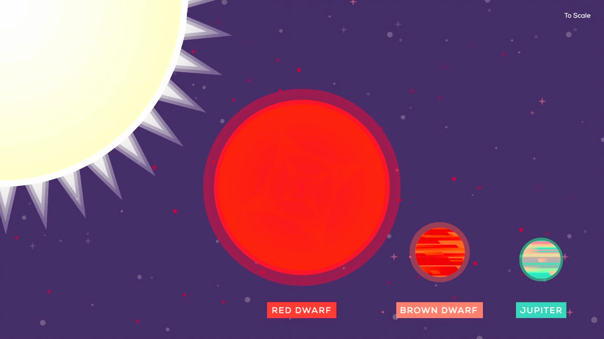
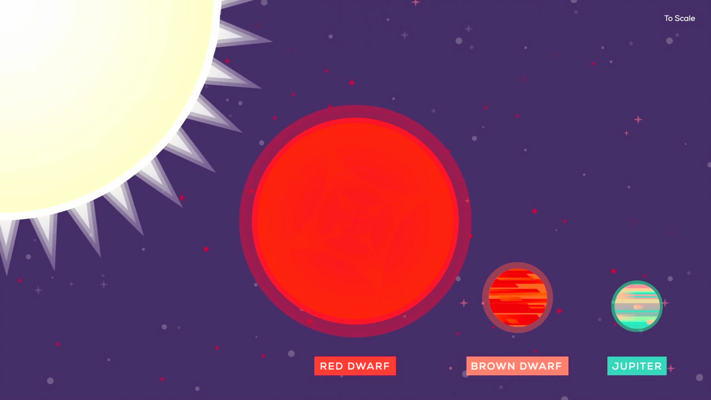

Chapter 11
The Earth in Space
Physics - Year 11
Naypyitaw International School of Acumen
- The Earth is a planet that rotates around the Sun.
- It rotates on its axis, which is tilted at an angle of $23.5^\circ$, once in approximately $24$ hours.
- The half of the Earth that is facing the Sun experiences daytime. The rotation of the Earth causes the 24 hour day-night cycle.

- The poles of the Earth experience about six months of day and six months of night because of the tilt of the Earth on its axis.
- Because of this tilt each Pole is tilted towards and away from the Sun for about six months each.

- The Earth takes about 365 days or one year to orbit the Sun.
- The path that the Earth takes around the sun is an ellipse. This means that the Earth is closer to the Sun at some points, and farther at some points.

- Temperate countries experience four seasons: spring, summer, autumn, and winter
- Seasons occur because the Earth orbits the Sun in an elliptical orbit and rotates on its axis on a tilt.


- It takes approximately one month for the Moon to orbit the Earth.
- The Moon's gravity causes the tides on Earth by pulling at the water in Earth's oceans
- Tidal forces from Earth have slowed the Moon's rotation to the point where the same side is always facing the Earth. The other face, which is never visible from the Earth, is called the far side of the Moon.

As the moon orbits the Earth, its appearance changes between full circle and thin crescent, with other shapes in between.
These are called the phases of the Moon.
Orbital speed
$$ \begin{aligned} \text{average orbital speed} & = \frac{\text{orbit distance}}{\text{time taken for one orbit}}\\ \implies \text{average orbital speed} & = \frac{2 \pi r}{t} \\ \end{aligned}$$
- The Sun is a star at the centre of the Solar System.
- All objects orbiting the Sun have elliptical orbits, although some are roughly circular.
- Eight planets orbit the Sun. These are:
Mercury, Venus, Earth, Mars, Jupiter, Saturn, Uranus and Neptune. - Mercury, Venus, Earth and Mars are smaller rocky planets.
- Jupiter, Saturn, Uranus and Neptune are larger planets made from gas and ice.


- Mercury is the smallest planet in our solar system and the nearest to the Sun.
- Mercury is only slightly larger than Earth's Moon.
- It is the fastest planet, completing an orbit around the Sun every 88 days.

- Venus is the second planet from the Sun, and the sixth largest planet.
- It is the hottest planet in our solar system.
- Venus is a cloud-swaddled planet and our nearest planetary neighbor. It has a surface hot enough to melt lead

- Mars is a dusty, cold, desert world with a very thin atmosphere.
- This planet has polar ice caps, extinct volcanoes, canyons and weather.

- The asteroid belt between Mars and Jupiter contains millions of asteroids.
- Asteroids are irregularly shaped lumps of rock left over from the formation of the Solar System.
- Ceres is the only object in the asteroid belt which is large enough to be classified as a dwarf planet.
- Jupiter is the largest and oldest planet in our solar system.
- Jupiter is a gas giant and so lacks an Earth-like surface. If it has a solid inner core at all, it’s likely only about the size of Earth.
- Jupiter's atmosphere is made up mostly of hydrogen and helium.

- Saturn is a gas giant whose atmosphere is made up mostly of hydrogen and helium.
- Saturn has 53 known moons with an additional 29 moons awaiting confirmation of their discovery
- Saturn's rings are made of billions of chunks of ice, dust, and rock
- Uranus is an ice giants in the outer solar system.
- Most of the planet's mass is made up of water, methane, and ammonia above a small rocky core.
- Uranus gets its blue-green color from methane gas in the atmosphere.

- Neptune was the first planet located through mathematical calculations.
- Neptune is an ice giant, made up of a thick fog of water, ammonia, and methane over a solid core the size of Earth.
- It is the densest of the giant planets.

- Dwarf planets are less massive than the eight planets but are also almost spherical.
- Their gravity is not enough to attract nearby matter, so there may be other objects in their orbit.
- Pluto is a dwarf planet in the Kuiper belt with a very elliptical orbit.


- Comets are lumps of frozen gases and dust left over from the birth of the Solar System
- The heat near the Sun causes some of the comet’s frozen gas to evaporate creating a long bright tail.

The orbits of comets are highly elliptical

- The Kuiper belt beyond Neptune contains more leftovers from Solar System.
- It has asteroids and other dwarf planets as well as Pluto.
- Comets with orbit times of less than 200 years, such as Halley’s comet, originate here.
- The Oort cloud is thought to contain billions of icy rocks and dwarf planets like the Kuiper belt.
- It is also home to comets with orbit times longer than 200 years.

- A nebula is a giant cloud of dust and gas in space.
- Some nebulae come from the gas and dust thrown out by the explosion of a dying star, such as a supernova.
- Other nebulae are regions where new stars are beginning to form.
Formation of the Solar System
- About 4.6 billion years ago, the Solar System was formed from a swirling cloud of gas and dust in space.
- These clouds called nebulae consist of mainly hydrogen plus a mixture of heavier elements.
- The particles in the cloud were attracted to each other because of the force of gravity between them.
- Gradually, the cloud began to collapse which made it spin faster and flatten out.
- This kinetic energy became heat energy as they crashed together.
- A hot spinning mass called a protostar was formed at the centre of a swirling disc of gas and dust.

Formation of the Solar System
- The swirling disc of hot gases and heavy materials is called an accretion disc.
- Eventually, the protostar became dense and hot enough for nuclear fusion to occur at its centre.
- It became a star — the Sun — and began to give out an enormous amount of energy.
- The matter in the spinning disc also gradually clumped together to become the rest of the Solar System.
- The four rocky planets formed from heavier material that was pulled near the Sun by its force of gravity.
- Lighter gases collected further away, forming the four gas giants.

- The strength of the gravitational field of any object decreases as the distance from the object increases.
- Most of the mass of the Solar System is in the Sun, which causes enough gravity to keep the planets orbiting the Sun
- The gravitational potential energy is larger the farther an object is from the Sun.
- However, this also results in objects further away having less kinetic energy.
- This means the planets farther away from the Sun have slower orbital speeds.

- The total energy of an object is conserved
- As an object, like a comet, moves closer to the Sun, the gravitational potential energy is converted to kinetic energy, and the object moves faster.
- This is known as Kepler's Third Law.

- Meteors are small grains of dust floating in space that are pulled towards the Earth
- As they pass the Earth's atmosphere, they burn up, leaving trails of light
- Mars has two moons, Phobos and Deimos
- Both moons are irregularly shaped and look like battered potatoes. They are also blacker than coal.
- There are 95 moons of Jupiter with confirmed orbits
- The most massive of the moons are the four Galilean moons:
Io, Europa, Ganymede, and Callisto - Ganymede is the largest in the solar system. It's bigger than Mercury and Pluto and is the only moon known to have its own magnetic field.

- Europa is made of silicate rock and has a water-ice crust.
- Europa has the smoothest surface of any known solid object in the Solar System which is due to a water ocean beneath the surface, which could potentially harbor life
- Saturn has 146 moons in its orbit, more than any other planet.
- Saturn's hazy moon Titan is larger than Mercury and has a methane cycle.
- The most famous geysers in our solar system outside of Earth belong to Saturn's active moon Enceladus.
- Geyser-like jets spew water vapor and ice particles from an underground ocean beneath the icy crust of Enceladus.
- Uranus has 28 known moons.
- Umbriel is ancient, and the darkest of the five large moons. It has many old, large craters and sports a mysterious bright ring on one side.
- The planet Neptune has 16 known moons
- Triton is Neptune's largest moon, and the only moon in the solar system to orbit in the opposite direction of its planet's rotation
Artificial satellites are man-made objects that are placed into orbit around the Earth by rockets. They are equipped with cameras and instruments to study the Earth, planets, and the universe.
Satellites have many uses, including:
- Communication
- Earth observation
- Navigation
- Weather prediction
- Space exploration
- Sputnik 1 was the first artificial satellite to safely make it into Earth orbit.
- While in space, Sputnik gathered data on the density of the upper layers of Earth's atmosphere and measured how well radio signals transmit in the ionosphere, a layer in the upper atmosphere that is full of charged particles.
- Sputnik 2, launched on 3 November 1957, was the second spacecraft launched into Earth orbit
- It was the first to carry an animal into orbit, a Soviet space dog named Laika.
- Vostok 1 was the first satellite to carry a person into space
- Soviet cosmonaut Yuri Gagarin became the first person to fly in space on April 12, 1961, achieving three orbits before returning to Earth.
- Luna 10 wa the first spacecraft to orbit the moon.
- The spacecraft measured the moon's magnetic field, radiation environment, gravity field and other metrics.
- Mariner 9 (1971) was the first spacecraft to orbit Mars.
- Hubble launched with myopia caused by a malformed mirror, a problem that was corrected by astronauts during a servicing mission in 1993.
- Afterwards, the telescope delivered a series of iconic images that graced school textbooks and the early Internet, such as the "Pillars of Creation" in the Eagle Nebula.
- The Galileo mission arrived at Jupiter in 1995 and was the first orbiting mission there
- It had goals of better understanding the physical properties and geological history of the planet and its numerous moons.
- It sent a descent probe into Jupiter early in its mission to reveal more about the atmosphere to scientists.

- The International Space Station (ISS) launched in 1998 to provide a long-term microgravity platform to study how the human body changes in space, typically for missions of six months (although some have lasted close to a year.)
- NASA's Parker Solar Probe has an ambitious mission to swoop through the sun's super-hot atmosphere periodically to better understand the nature of our closest star.
- The mission launched in 2018 and has done several flybys of Venus to move it close to the sun's surface.
- SpaceX's Starlink constellation, which began launches in 2019, has a mission of bringing consistent and swift broadband access to just about anywhere on Earth.
- SpaceX plans to have 12,000 individual satellites in the constellation and could send up 30,000 more if it receives approval from the Federal Communications Commission.
- The Sun is a medium size star, consisting mostly of hydrogen and helium.
- Radiation is emitted from glowing hydrogen which is heated by the energy released in nuclear reactions within the Sun.
The Sun radiates most of its energy in the infrared, visible and ultraviolet regions of the electromagnetic spectrum.
 

- Compared with the many stars in the universe, the Sun is an average yellow star.
- Some stars are bigger, hotter than the Sun: these are called blue giants
- Some stars are smaller, cooler and redder: these are called red dwarfs
- A galaxy is a large collection of stars; there are billions of stars in a galaxy.
- As well as containing stars, galaxies consist of clouds of gas, mostly hydrogen and dust.
- The Milky Way is the spiral galaxy to which our Solar System belongs
- It can be seen on dark nights as a narrow band of light spread across the sky

- The Milky Way is a flattish spiral galaxy with a bulge at the centre.
- Our Solar System is in one of the spiral arms.
The Andromeda Galaxy is the nearest major galaxy to the Milky Way.
The closest star to the Sun in the Milky Way galaxy is called Proxima Centauri.
- Proxima Centauri is about 38 million billion metres away.
- Distances in the Milky Way are so big that it is more convenient to use a larger unit of distance called the light year.
1 light-year is the distance that light travels in one year in the vacuum of space.
Question: Calculate the value of 1 light year in metres.
It is equal to $9.5 \times 10^{15}\; m$.